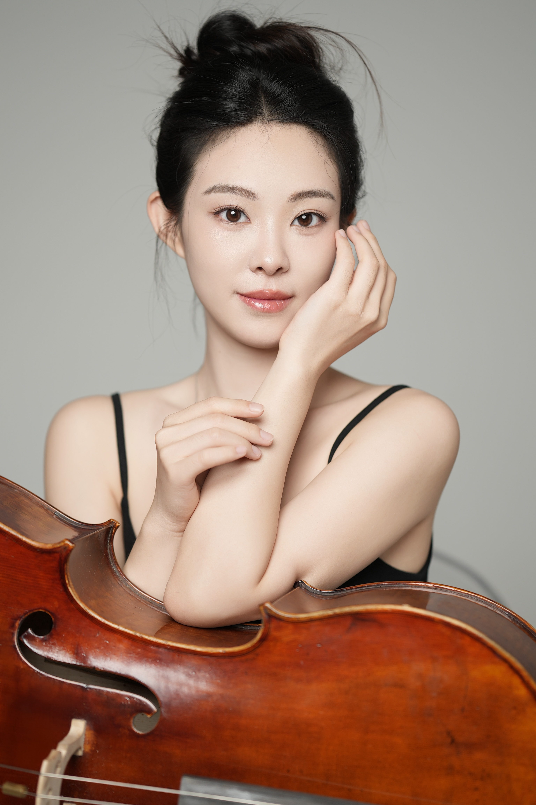
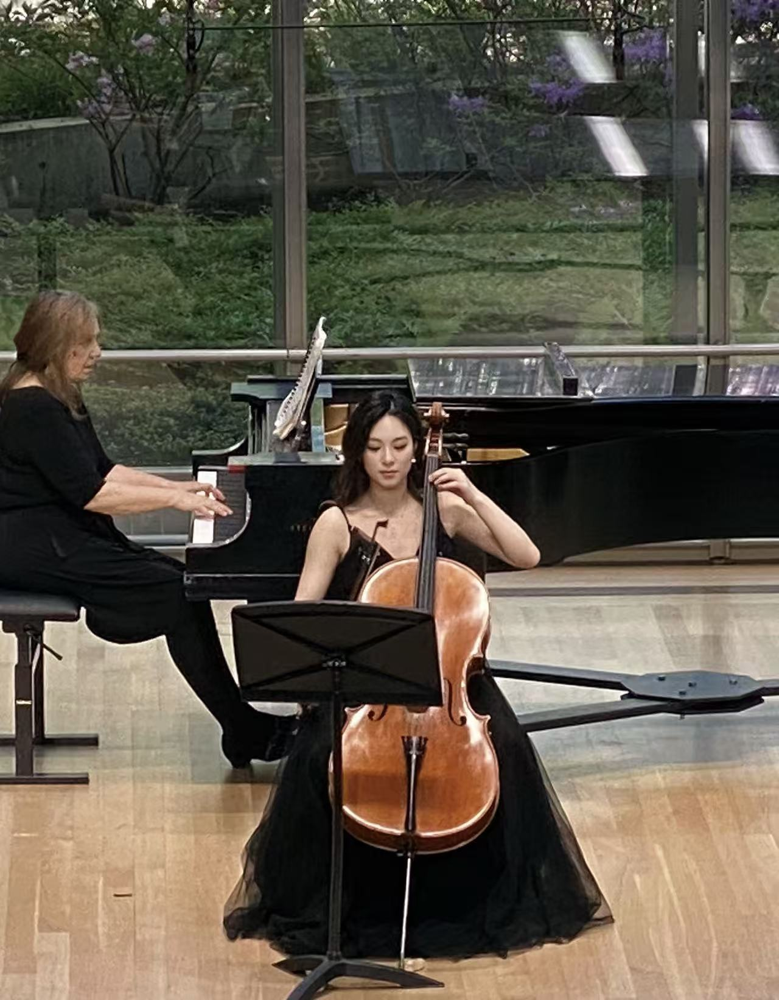
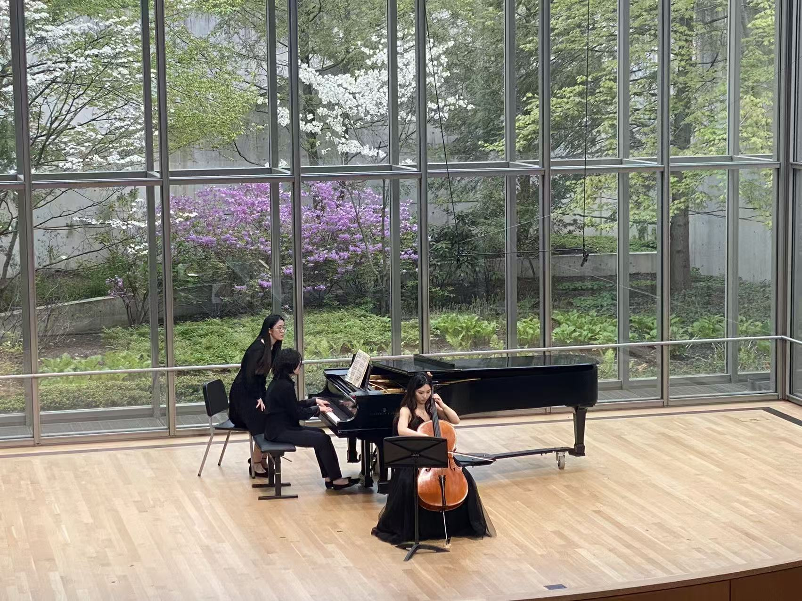

Private Cello Lessons
Individual instruction for beginning through advanced students, starting at age 5. Lessons develop a relaxed physical approach, beautiful tone, secure technique, and musical independence.
Private cello lessons for Eastside families
Thoughtful, individual instruction for students ages 5 and up—from their very first notes to chamber music, orchestral excerpts, and confident performance.

Music is more than a skill. It is a way to develop aesthetic awareness, expressive confidence, and a comfortable, capable relationship with one’s body.
Zhiting Zhang is a Kirkland-based cellist and teacher welcoming students from Bellevue, Redmond, Issaquah, Sammamish, and across Seattle’s Eastside. She creates an encouraging, attentive space for each student to grow, balancing a strong technical foundation with imagination, listening, and personal expression.
With training at the Cleveland Institute of Music and Xi’an Conservatory of Music, and doctoral study at Midwest University, Zhiting brings a broad performance background to every lesson.
She has performed with the Cleveland Institute of Music Symphony Orchestra and the Seattle Philharmonic Orchestra, and has appeared in solo and chamber performances in Cleveland and Seattle.
Read her experience →
Every student arrives with a different voice, body, goal, and pace. Zhiting adapts her teaching to meet them there—building sound, posture, musical understanding, and the joy of making music.
Individual instruction for beginning through advanced students, starting at age 5. Lessons develop a relaxed physical approach, beautiful tone, secure technique, and musical independence.
Guidance in Suzuki repertoire and ABRSM and RCM examination pathways, with thoughtful repertoire choices and reliable preparation for every stage.
Specialized coaching in chamber music: listening, ensemble communication, rehearsal skills, and the shared responsibility of making music together.
Coaching for cello duos, trios, quartets, and larger cello ensembles, developing rhythmic precision, balance, unified sound, and the pleasure of playing together.
Focused support for orchestral excerpts and auditions, informed by dedicated study in both chamber music and orchestral repertoire.
Featured performance
A glimpse of Zhiting’s artistry and the musical perspective she brings to the studio.
Studio Journal
Teaching reflections, practice ideas, chamber music insights, and the latest studio news—all in one place.
Visit the Journal →
“The goal is not simply to play the right notes, but to help each student discover how music can become part of who they are.”
Doctoral Candidate, Music Performance
Midwest University
Master of Music, Cello Performance
Cleveland Institute of Music
Bachelor of Music, Cello Performance
Xi’an Conservatory of Music
Principal Associate Cellist
Seattle Philharmonic Orchestra
Gold Medal, Osaka International Music Competition (China)
First Prize, Golden Musical Competition
Begin your musical journey
To ask about availability, lesson format, or the best place to begin, please get in touch.